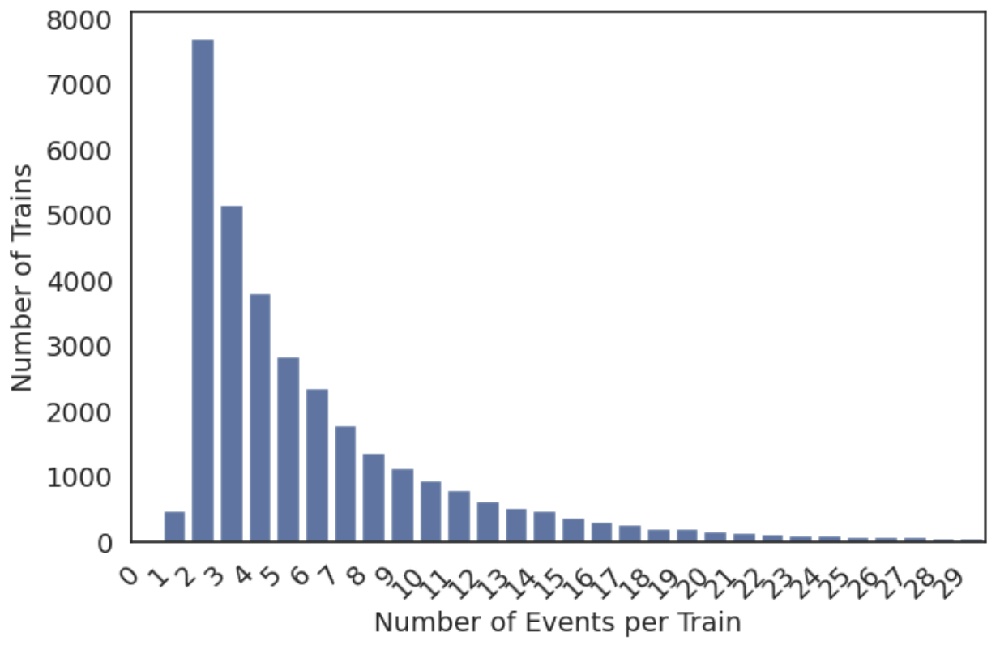
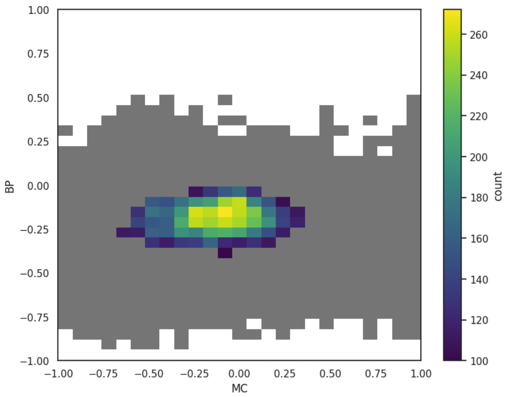
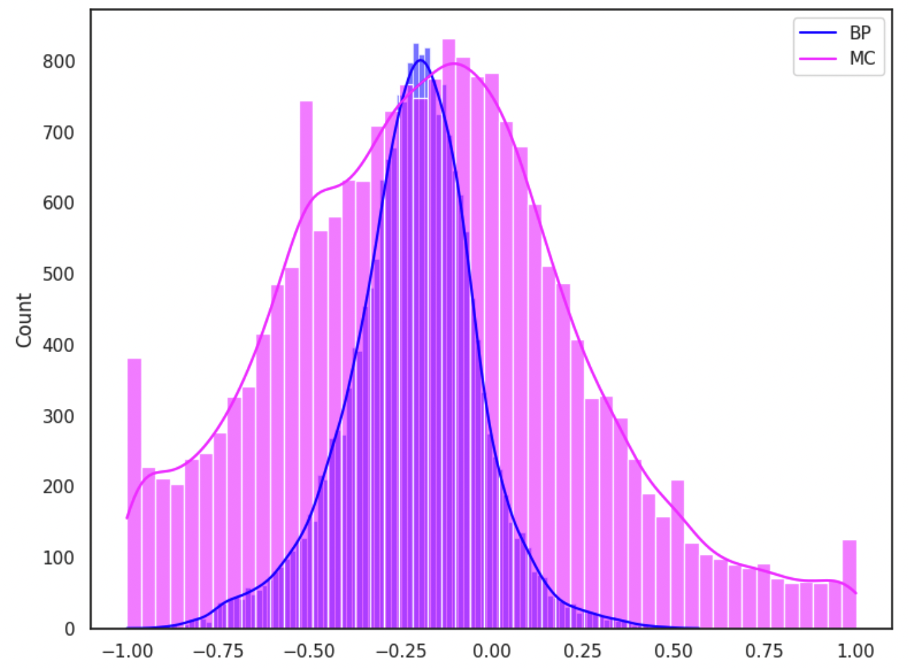
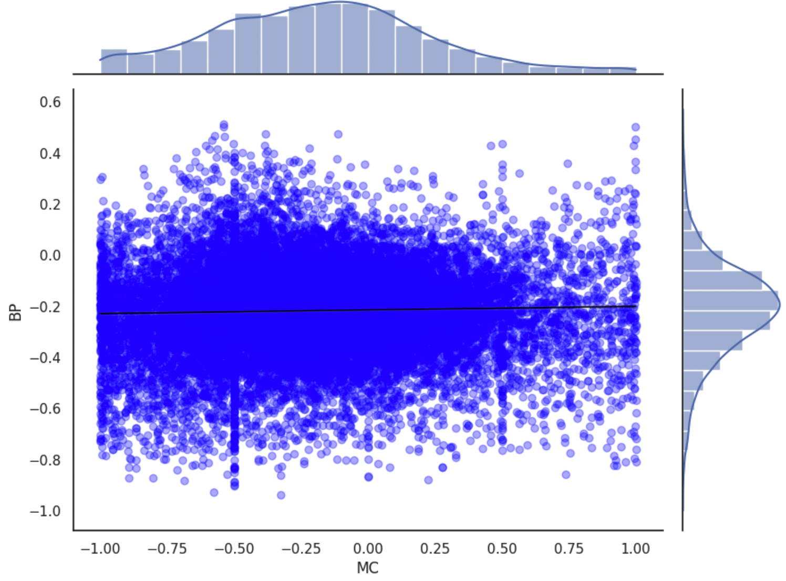
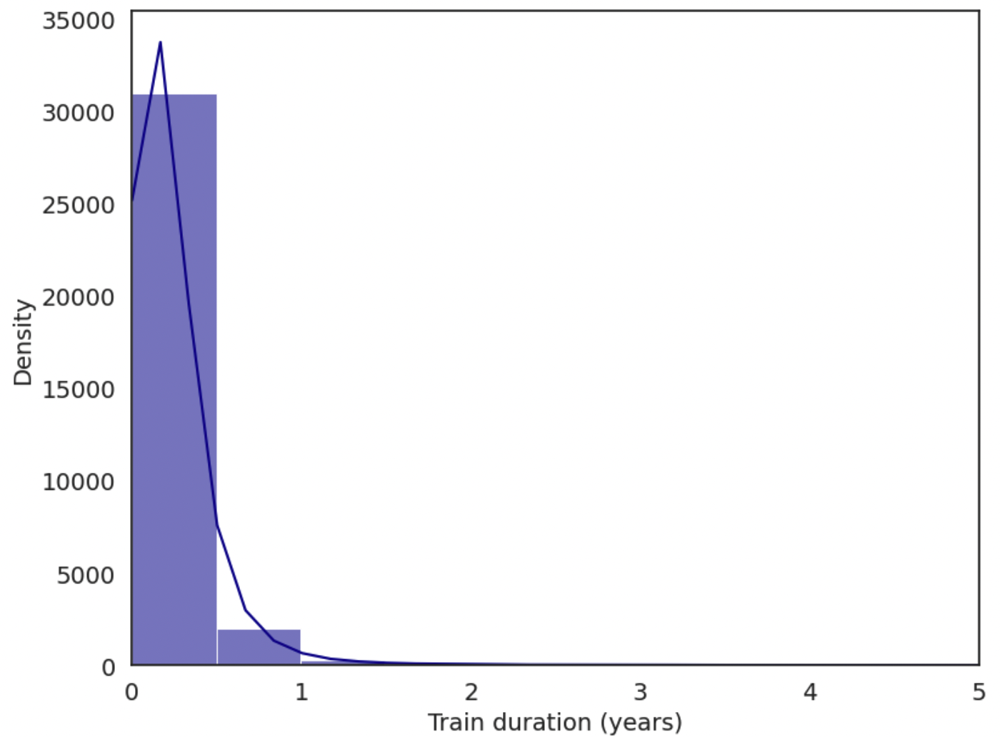

bursty_dynamics.visual
This module contains functions for plotting the results.
- bursty_dynamics.visual.event_counts(train_info_df, x_limit=30, hue=None, **kwargs)
Plots a count of unique events per train from the given DataFrame.
Parameters
- train_info_dfDataFrame
A DataFrame containing a column named 'unique_event_counts' which holds the count of unique events (no duplicates at same time) for different entries.
- x_limitint, optional
The upper limit for the x-axis. Default is 30.
- huestr, optional
Column name for hue segmentation. Default is None.
- kwargs
Additional keyword arguments passed to sns.countplot.
Returns
- matplotlib.figure.Figure
The figure object containing the plot.
Example
Here is an example plot of the function:

{kind=link}
- bursty_dynamics.visual.gridplot(df, bins=25, lower_limit=0, text_scaling=6, figsize=(9, 7), **kwargs)
Create a grid plot of Memory Coefficient (MC) vs Burstiness Parameter (BP) with a color bar.
Parameters
- dfDataFrame
Input DataFrame containing columns 'MC' and 'BP'.
- binsint, optional
Number of bins for the histogram. Default is 25.
- lower_limitint, optional
Minimum value for the color scale. Values below this will be colored grey. Default is 0.
- text_scalingfloat, optional
Scaling factor for the text in the plot. Default is 6.
- figsizetuple, optional
Size of the figure. Default is (9, 7).
Returns
- matplotlib.figure.Figure
The figure object containing the plot.
Example
Here is an example plot of the function:

{kind=link}
- bursty_dynamics.visual.histogram(df, hist=True, set_axis=False, hue=None, **kwargs)
Plot histograms for Burstiness Parameter (BP) and Memory Coefficient (MC).
Parameters
- dfDataFrame
Input DataFrame containing columns 'BP' and 'MC'.
- histbool or str, optional
If True, plot separate histograms for 'BP' and 'MC'. If 'Both', plot overlapping histograms for 'BP' and 'MC'. If 'BP' or 'MC', plot histogram for the specified column. Default is True.
- set_axisbool, optional
Whether to set axis limits to [-1, 1]. Default is False.
- huestr, optional
Column name for hue segmentation. Default is None.
- kwargs
Additional keyword arguments passed to sns.histplot.
Returns
- matplotlib.figure.Figure or None
Figure object containing the generated plots if successful, otherwise None if the 'hist' parameter is invalid.
Notes
If 'hist' is True, it will create separate histograms for 'BP' and 'MC' side by side.
If 'hist' is 'Both', it will create overlapping histograms for 'BP' and 'MC' on the same plot.
If 'hist' is 'BP' or 'MC', it will create a histogram for the specified column.
The hue parameter allows for segmented histograms based on the specified column.
When hist is set to 'Both', the hue parameter is ignored.
The set_axis parameter can be used to standardize the x-axis range to [-1, 1].
Additional styling and plotting options can be passed through **kwargs.
Example
Here is an example plot of the function:

{kind=link}
- bursty_dynamics.visual.scatterplot(df, hue=None, set_axis=False, **kwargs)
Create a scatter plot with marginal histograms showing the relationship between 'MC' and 'BP'.
Parameters
- dfDataFrame
Input DataFrame containing columns 'MC' and 'BP' which are plotted on the x and y axes, respectively.
- huestr, optional
Column name in the DataFrame used for color encoding of the scatter plot. If None, the plot is created without color encoding.
- set_axisbool, optional
Whether to set the axis limits to [-1, 1]. Default is False. If True, the x and y axes will be constrained to the range [-1, 1].
- kwargs
Additional keyword arguments passed to sns.jointplot.
Returns
- matplotlib.figure.Figure
The figure object containing the scatter plot and marginal histograms.
Example
Here is an example plot of the function:

{kind=link}
- bursty_dynamics.visual.train_duration(train_info_df, x_limit=5, hue=None, **kwargs)
Plots a distribution of train durations in years from the given DataFrame.
Parameters
- train_info_dfDataFrame
A DataFrame containing a column named 'train_duration_yrs' which holds the duration of training in years for different entries.
- x_limitint, optional
The upper limit for the x-axis. Default is 5.
- huestr, optional
Column name for hue segmentation. Default is None.
- kwargs
Additional keyword arguments passed to sns.histplot.
Returns
- matplotlib.figure.Figure
Figure object containing the generated plot.
Example
Here is an example plot of the function:

{kind=link}
Example Usage:
gplot = gridplot(train_score_df, bins=25, lower_limit=100)